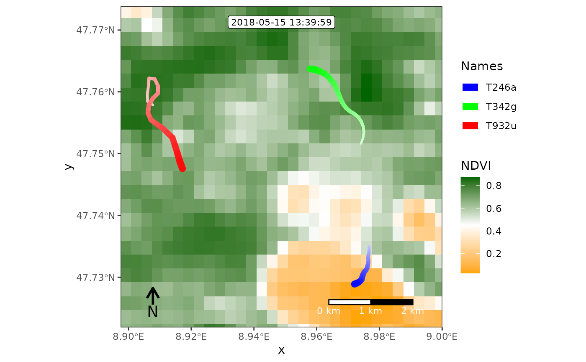

Create frames of spatial movement maps for animation
frames_spatial.Rdframes_spatial creates frames from movement and map/raster data. If no custom raster data is provided, a basemap is pulled from a map tile service using the basemaps package. Frames are returned as an object of class moveVis and can be subsetted, viewed (see render_frame), modified (see add_gg and associated functions ) and animated (see animate_frames).
Usage
frames_spatial(
m,
r = NULL,
r_type = "gradient",
fade_raster = FALSE,
crop_raster = TRUE,
map_service = "osm",
map_type = "streets",
map_res = 1,
map_token = NULL,
map_dir = NULL,
margin_factor = 1.1,
equidistant = NULL,
ext = NULL,
crs = if (is.null(r)) st_crs(3857) else st_crs(terra::crs(r)),
path_size = 3,
path_end = "round",
path_join = "round",
path_mitre = 10,
path_arrow = NULL,
path_colours = NA,
path_alpha = 1,
path_fade = FALSE,
path_legend = TRUE,
path_legend_title = "Names",
tail_length = 19,
tail_size = 1,
tail_colour = "white",
trace_show = FALSE,
trace_size = tail_size,
trace_colour = "white",
cross_dateline = FALSE,
...,
verbose = TRUE
)Arguments
- m
move2object of uniform time scale and time lag as returned byalign_move. Can contain a column namedcolourto control path colours (see details below).- r
terraobject, either aSpatRaster(mono-temporal) or aSpatRasterDataset(multi-temporal). In case of the latter, times of `r` must be defined as 'POSIXct' (seetimeand details below).- r_type
character, either
"gradient"or"discrete". Ignored, ifrcontains three bands, which are treated as RGB.- fade_raster
logical, if
TRUE,ris interpolated over time. IfFALSE,relements are assigned to those frames closest to the equivalent times ofr.- crop_raster
logical, whether to crop rasters in
rto frame extents before plotting or not.- map_service
character, a map service, e.g.
"osm". Useget_maptypesfor a list of available map services and types..- map_type
character, a map type, e.g.
"streets". Useget_maptypesfor available map services and types.- map_res
numeric, resolution of base map in range from 0 to 1.
- map_token
character, mapbox authentification token for mapbox basemaps. Register at https://www.mapbox.com/ to get a mapbox token. Mapbox is free of charge after registration for up to 50.000 map requests per month. Ignored, if
map_service = "osm".- map_dir
character, directory where downloaded basemap tiles can be stored. By default, a temporary directory is used. If you use moveVis often for the same area it is recommended to set this argument to a directory persistent throughout sessions (e.g. in your user folder), so that baesmap tiles that had been already downloaded by moveVis do not have to be requested again.
- margin_factor
numeric, factor relative to the extent of
mby which the frame extent should be increased around the movement area. Ignored, ifextis set.- equidistant
logical, whether to make the map extent equidistant (squared) with y and x axis measuring equal distances or not. Especially in polar regions of the globe it might be necessaray to set
equidistanttoFALSEto avoid strong stretches. By default (equidistant = NULL), equidistant is set automatically toFALSE, ifextis set, otherwiseTRUE. Read more in the details.- ext
sf bboxin same CRS asm, optional. If set, frames are cropped to this extent. If not set, the extent is computed fromm, optionally with a margin set bymargin_factor.- crs
sf crsobject. This is the projection that is used for visualzing both movement and map data. Defaults tost_crs(3857)(Web Mercator), unlessris defined. In that case,st_crs(r)is used.- path_size
numeric, size of each path.
- path_end
character, either
"round","butt"or"square", indicating the path end style.- path_join
character, either
"round","mitre"or"bevel", indicating the path join style.- path_mitre
numeric, path mitre limit (number greater than 1).
- path_arrow
arrow, path arrow specification, as created by grid::arrow().
- path_colours
character, a vector of colours. Must be of same length as number of individual tracks in
mand refers to the order of tracks inm. If undefined (NA) andmcontains a column namedcolour, colours provided withinmare used (see details). Othwersie, colours are selected from a standard rainbow palette per individual track.- path_alpha
numeric, defines alpha (transparency) of the path. Value between 0 and 1. Default is 1.
- path_fade
logical, whether paths should be faded towards the last frame or not. Useful, if
trace_show = TRUEand you want to hold the last frame usingend_pauseinanimate_frames.- path_legend
logical, wether to add a path legend from
mor not. Legend tracks and colours will be ordered by the tracks' temporal apperances, not by their order inm.- path_legend_title
character, path legend title. Default is
"Names".- tail_length
numeric, length of tail per movement path.
- tail_size
numeric, size of the last tail element. Default is 1.
- tail_colour
character, colour of the last tail element, to which the path colour is faded. Default is "white".
- trace_show
logical, whether to show the trace of the complete path or not.
- trace_size
numeric, size of the trace. Default is same as
tail_size.- trace_colour
character, colour of the trace. Default is "white". It is recommended to define the same colours for both
trace_colourandtail_colourto enforce an uninterrupted colour transition form the tail to the trace.- cross_dateline
logical, whether tracks are crossing the dateline (longitude 180/-180) or not. If
TRUE, frames are expanded towards the side of the dateline that is smaller in space. Applies only if the CRS ofmis not projected (geographical, lon/lat). IfFALSE(default), frames are clipped at the minimum and maximum longitudes and tracks cannot cross.- ...
Additional arguments customizing the frame background:
alpha, numeric, background transparency (0-1).maxpixels, maximum number of pixels to be plotted per frame. Defaults to 500000. Reduce to decrease detail and increase rendering speeds.macColorValue, numeric, only relevant for RGB backgrounds (i.e. ifr_type = "RGB"or if a default base map is used). Maximum colour value (e.g. 255). Defaults to maximum raster value.
- verbose
logical, if
TRUE, messages and progress information are displayed on the console (default).
Details
If argument path_colours is not defined (set to NA), path colours can be defined by adding a character column named colour to m, containing a colour code or name per row (e.g. "red". This way, for example, column colour for all rows belonging to individual A can be set to "green", while column colour for all rows belonging to individual B can be set to "red".
Colours could also be arranged to change through time or by behavioral segments, geographic locations, age, environmental or health parameters etc. If a column name colour in m is missing, colours will be selected automatically. Call colours() to see all available colours in R.
Basemap colour scales can be changed/added using add_colourscale or by using ggplot2 commands (see examples). For continous scales, use r_type = "gradient". For discrete scales, use r_type = "discrete".
If argument equidistant is set, the map extent is calculated (thus enlarged into one axis direction) to represent equal surface distances on the x and y axis.
Note
The use of the map services "osm_thunderforest" and "mapbox" require registration to obtain an API token/key which can be supplied to map_token. Register at https://www.thunderforest.com/ and/or https://www.mapbox.com/ to get a token.
The projection of m is treated as target projection. Default basemaps accessed through a map service will be reprojected into the projection of m. Thus, depending on the projection of m, it may happen that map labels are distorted. To get undistorted map labels, reproject m to the web mercator projection (the default projection for basemaps): spTransform(m, crs("+init=epsg:3857"))
Examples
library(moveVis)
library(move2)
library(terra)
# Example using multi-temporal raster data as basemap
data("move_data")
# align movement
m <- align_move(move_data, res = units::set_units(4, "min"))
#> Temporal resolution of 4 [min] is used to align trajectories.
# get available map types
get_maptypes()
#> $osm
#> [1] "streets" "streets_de" "topographic"
#>
#> $osm_stamen
#> [1] "toner" "toner_bg" "terrain" "terrain_bg" "watercolor"
#>
#> $osm_stadia
#> [1] "alidade_smooth" "alidade_smooth_dark" "outdoors"
#> [4] "osm_bright"
#>
#> $osm_thunderforest
#> [1] "cycle" "transport" "landscape" "outdoors"
#> [5] "transport_dark" "spinal" "pioneer" "mobile_atlas"
#> [9] "neighbourhood" "atlas"
#>
#> $carto
#> [1] "light" "light_no_labels" "light_only_labels"
#> [4] "dark" "dark_no_labels" "dark_only_labels"
#> [7] "voyager" "voyager_no_labels" "voyager_only_labels"
#> [10] "voyager_labels_under"
#>
#> $mapbox
#> [1] "streets" "outdoors" "light" "dark" "satellite" "hybrid"
#> [7] "terrain"
#>
#> $esri
#> [1] "natgeo_world_map"
#> [2] "usa_topo_maps"
#> [3] "world_imagery"
#> [4] "world_physical_map"
#> [5] "world_shaded_relief"
#> [6] "world_street_map"
#> [7] "world_terrain_base"
#> [8] "world_topo_map"
#> [9] "world_dark_gray_base"
#> [10] "world_dark_gray_reference"
#> [11] "world_light_gray_base"
#> [12] "world_light_gray_reference"
#> [13] "world_hillshade_dark"
#> [14] "world_hillshade"
#> [15] "world_ocean_base"
#> [16] "world_ocean_reference"
#> [17] "antarctic_imagery"
#> [18] "arctic_imagery"
#> [19] "arctic_ocean_base"
#> [20] "arctic_ocean_reference"
#> [21] "world_boundaries_and_places_alternate"
#> [22] "world_boundaries_and_places"
#> [23] "world_reference_overlay"
#> [24] "world_transportation"
#> [25] "delorme_world_base_map"
#> [26] "world_navigation_charts"
#>
#> $maptiler
#> [1] "aquarelle" "backdrop" "basic" "bright" "dataviz" "landscape"
#> [7] "ocean" "outdoor" "satellite" "streets" "toner" "topo"
#> [13] "winter"
#>
# with osm topographic base map
if (FALSE) { # \dontrun{
frames <- frames_spatial(
m, map_service = "osm", map_type = "topographic",
alpha = 0.5
)
# take a look at one of the frames, e.g. the 100th
frames[[100]]
frames <- frames %>%
add_northarrow(position = "bottomleft") %>%
add_scalebar(colour = "black", position = "bottomright") %>%
add_progress() %>%
add_timestamps(type = "label")
frames[[100]]
# animate frames as GIF
out_file <- tempfile(fileext = ".gif")
animate_frames(frames, out_file = out_file)
browseURL(out_file) # view animation
# use a larger margin around extent
frames <- frames_spatial(
m, map_service = "osm", map_type = "topographic", alpha = 0.5,
margin_factor = 1.8
)
frames[[100]] # take a look
# use a extent object as your AOI
ext <- sf::st_bbox(move_data)
ext[["xmin"]] <- ext[["xmin"]] - (ext[["xmin"]]*0.03)
ext[["xmax"]] <- ext[["xmax"]] + (ext[["xmax"]]*0.03)
frames <- frames_spatial(
m, map_service = "osm", map_type = "topographic", alpha = 0.5,
ext = ext
)
frames[[100]]
# alter path appearance (make it longer and bigger)
frames <- frames_spatial(
m, map_service = "osm", map_type = "topographic", alpha = 0.5,
path_size = 4, tail_length = 29
)
frames[[100]]
# adjust path colours manually
frames <- frames_spatial(
m, map_service = "osm", map_type = "topographic", alpha = 0.5,
path_colours = c("black", "blue", "purple")
)
frames[[100]]
m$colour <- plyr::mapvalues(
as.character(mt_track_id(m)),
unique(mt_track_id(m)), c("orange", "purple", "darkgreen")
)
frames <- frames_spatial(
m, map_service = "osm", map_type = "topographic", alpha = 0.5
)
frames[[100]]
} # }
# create frames from custom (multi-temporal) basemaps
r <- readRDS(example_data(file = "basemap_data.rds"))
# timestamps of each raster are stored in the SpatRasterDataset:
time(r)
#> [[1]]
#> [1] "2018-05-15 07:00:00 UTC"
#>
#> [[2]]
#> [1] "2018-05-15 08:20:23 UTC"
#>
#> [[3]]
#> [1] "2018-05-15 09:44:48 UTC"
#>
#> [[4]]
#> [1] "2018-05-15 11:09:12 UTC"
#>
#> [[5]]
#> [1] "2018-05-15 12:33:37 UTC"
#>
#> [[6]]
#> [1] "2018-05-15 13:54:01 UTC"
#>
#> [[7]]
#> [1] "2018-05-15 15:18:25 UTC"
#>
#> [[8]]
#> [1] "2018-05-15 16:42:50 UTC"
#>
#> [[9]]
#> [1] "2018-05-15 18:07:15 UTC"
#>
#> [[10]]
#> [1] "2018-05-15 19:31:39 UTC"
#>
# create frames
frames <- frames_spatial(
m, r = r, r_type = "gradient",
fade_raster = TRUE
)
#> Processing input data...
#> Approximated animation duration: ≈ 7.52s at 25 fps using 188 frames
#> CRS (geodetic): 'WGS 84'
#> Assigning raster maps to frames...
# customize
frames <- frames %>%
add_colourscale(
type = "gradient", colours = c("orange", "white", "darkgreen"),
legend_title = "NDVI") %>%
add_northarrow(position = "bottomleft") %>%
add_scalebar(colour = "white", position = "bottomright") %>%
add_progress() %>%
add_timestamps(type = "label")
# render a single frame
frames[[100]]

# check available animation file formats
suggest_formats()
#> [1] "gif" "mov" "mp4" "flv" "avi" "mpeg" "3gp" "ogg"
if (FALSE) { # \dontrun{
# animate frames as GIF
out_file <- tempfile(fileext = ".gif")
animate_frames(frames, out_file = out_file)
browseURL(out_file) # view animation
# animate frames as mov
out_file <- tempfile(fileext = ".mov")
animate_frames(frames, out_file = out_file)
browseURL(out_file) # view animation
} # }